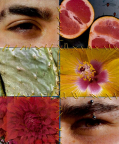
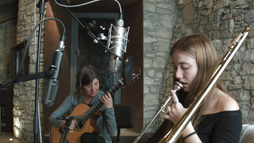
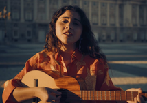
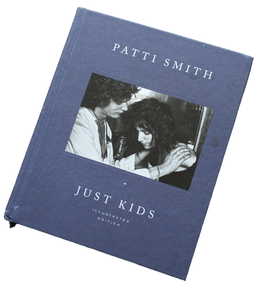
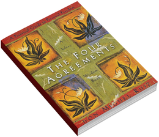
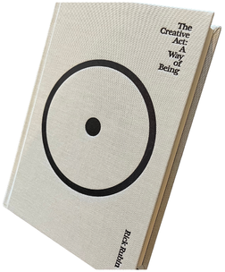
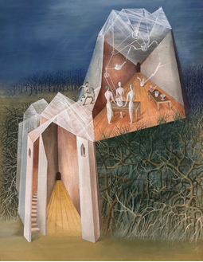
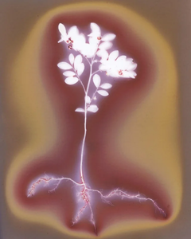
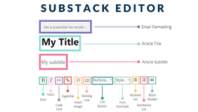

Adopting journaling as a daily practice has been a game changer for me in the way that I process my emotions, materialize my thoughts, organize my ideas, and improve my storytelling, my writing, and my redaction. In many occasions, journaling is the first step in my creative process and what allows me to visualize what I want to work on, grow, and develop
One of my favorite ways to experience art is through photography. I love that it leaves room for each's perception over the same subject, and how much it can change from one person to another. I like both film and digital photography but right now I have been practicing more on film because I really enjoy the whole process of developing, processing, digitalize, and edit it.
I love going through the process of editing and playing with all the possible results I can get from audio-visual material, it simply feels so inspiring. On the same note, lately I've been diving into creating mixed media, I find the whole process to have a chain effect on me by starting with a spark of inspiration and creativity that grows to be able to illuminate an entire building.
Ever since I have a memory I've felt incredibly inspired by nature but didn't always understand why. Now that I'm older I've been able to put it together... I see nature as an infinite/foundational source of inspiration and creativity because its balance, colors, textures, and structures. Observing natural forms and patterns allows me to adopt new perspectives, boost creativity, and develop innovative designs.






Centaur Tower Landscape (Paisaje torre centauro), Remedios Varo, 1943. This artwork is a surrealist, symbolic painting. Varo's work in this piece is blending themes of alchemy, magic, and mysticism, highlighting a conflict or coexistence between science (represented by the structured interior) and nature (the wild exterior). I like this painting in particular because i find it aesthetically pleasing and I interpret it as a reflexion of the duality that can exist in society.

ALumen print is a camera-less, solar-exposed photograph created by placing objects directly onto light-sensitive photographic paper. I'm new to this practice so I'm still learning some of the basics but my goal is to make a small collection of different elements from nature that I've captured through this process, and eventually I would also like to experiment with editing and designing around them.

I've been consuming a lot of audio essays intended to be educational on “creative” matters instead of just following the basis of traditional education. I have learned a lot thanks to these and it has inspired me to try to make my own essays on topics that I find interesting and that I want to learn more about... I would like to start pushing myself to do it in platforms like Substack, to improve my research methods and the way I engage with an audience.
